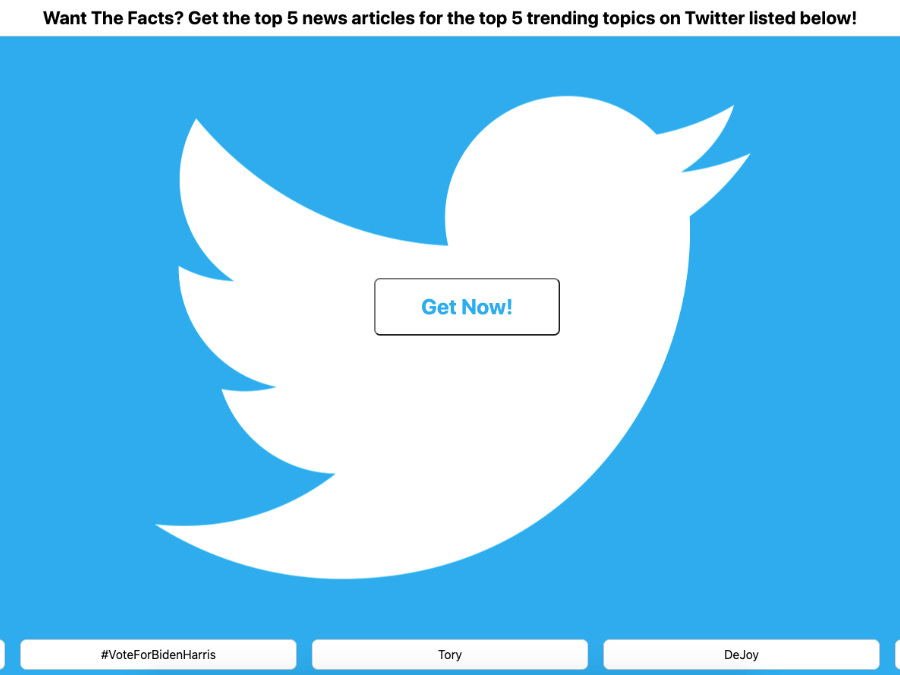

Twitter Trend News
When I make value judgements on various topics, I like to put them in perspective with relvant news.
Twitter is a good repository for at least the trending topics on what people are talking about, but not necessarily fact-based.
I wanted to take the top 5 trending topics from Twitter and just see the top 5 news articles for those topics.
Also, I wanted the ability to see the trending topics prior to looking at articles because they not be topics I am interested in at all. I put the topics on the landing page so the user could make a decsision on if they wanted to see the top 5 news articles for those particular topics or they could leave and come back later that day for a new set of topics.
Technologies Used
- HTML
- CSS
- JavaScript
- JQuery